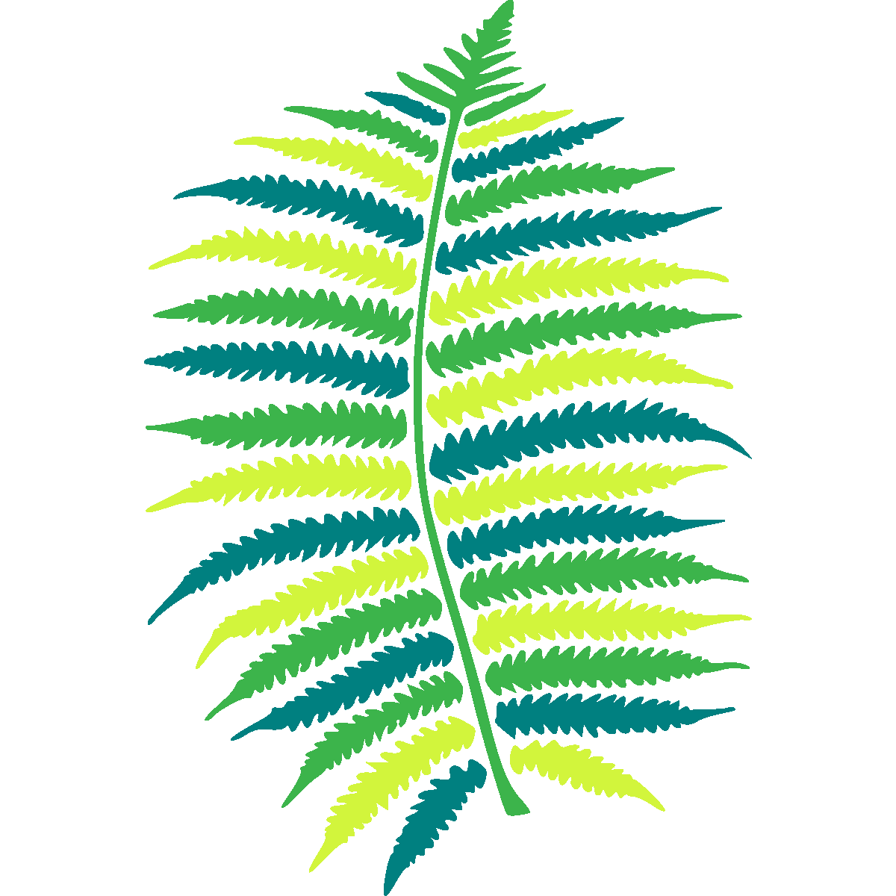
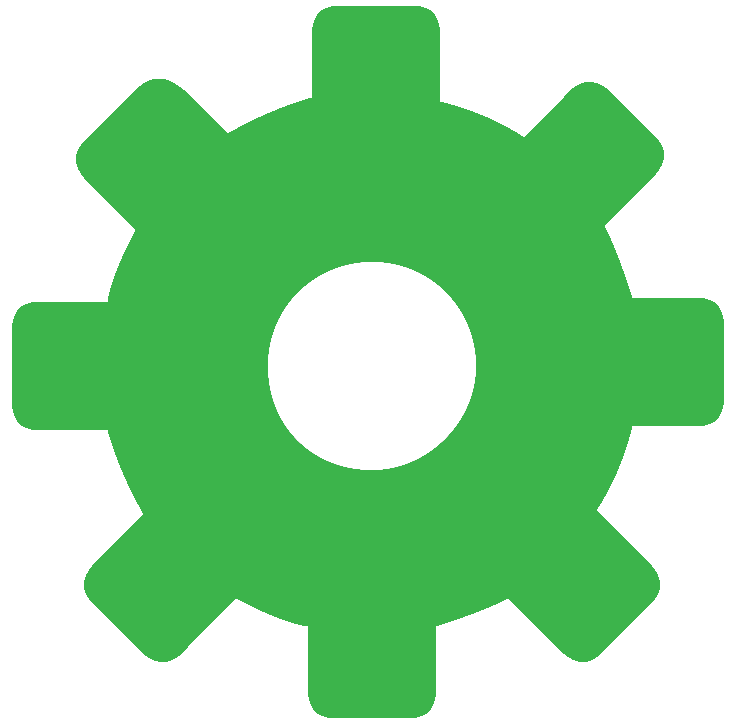
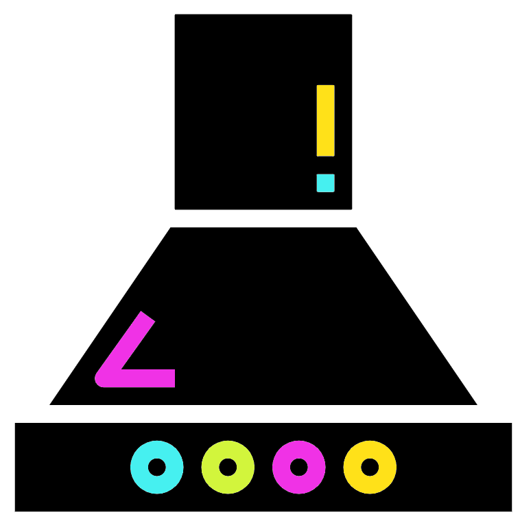

bracken -d $KRAKEN2_DB_PATH/minikraken2_v1_8GB \
-i K1.kreport2 -o K1.bracken -w K1.breport2 -r 100 -l S -t 5Bracken

Bracken (Bayesian Reestimation of Abundance with KrakEN) uses taxonomy labels assigned by Kraken2 to compute estimated abundances of species in a metagenomic sample.
Bracken abundance reestimation
Just like with Krona we can use the Kraken2 report files to run bracken.
Parameters

-d: Specifies theKraken2database that was used for taxonomic classification- In this case bracken requires the variable
$KRAKEN2_DB_PATHso the option is provided the full path to the kraken database - For clarity try the command
ls $KRAKEN2_DB_PATH/minikraken2_v1_8GB
- In this case bracken requires the variable
-i: TheKraken2report file, this will be used as the input-o: The outputBrackenfile. Information about its contents is below-w: Output report file- Contains the
Brackenread counts in a kraken-style report - This is an essential file if you want to use the
Brackenoutput in R using thephyloseqobject - Its usage is covered in our R community analysis workshop, We won’t cover it more here
- Contains the
-r 100: This is the ideal length of the reads that were used in theKraken2classification- It is recommended that the initial read length of the sequencing data is used
- We are using 100 here as we used a paired library of 100bp*2 reads
-l S: This specifies the taxonomic level/rank of theBrackenoutput- In this case
Sis equal to species with the other options beingD,P,C,O,FandG
- In this case
-t 5: This specifies the minimum number of reads required for a classification at the specified rank- Any classifications with fewer reads than the specified threshold will not receive additional reads from higher taxonomy levels when distributing reads for abundance estimation
- Five has been chosen here for this example data but in real datasets you may want to increase this number (default is 10).
Output and report file
With our command we created an output and a report file for bracken.
Output
The output file of Bracken (K1.bracken) contains the following columns:
- Name: Name of taxonomy at the specified taxonomic level
- Taxonomy ID: NCBI taxonomy id
- Level ID: Letter signifying the taxonomic level of the classification
- Kraken assigned read: Number of reads assigned to the taxonomy by
Kraken2 - Added reads with abundance reestimation: Number of reads added to the taxonomy by Bracken abundance reestimation
- Total reads after abundance reestimation: Number from field 4 and 5 summed. This is the field that will be used for downstream analysis
- Fraction of total reads: Relative abundance of the taxonomy
Report file
The --report created the report file (K1.breport2). It contains the Bracken read counts in the same format as the report file for kraken2
This is an essential file if you want to use the Bracken output in R using the phyloseq object. This is covered in our R community analysis workshop and won’t be covered here.
The fields of the output, from left-to-right, are as follows:
- Percentage of paired reads covered by the clade rooted at this taxon
- Number of paired reads covered by the clade rooted at this taxon
- Number of paired reads assigned directly to this taxon
- A rank code, indicating (U)nclassified, (R)oot, (D)omain, (K)ingdom, (P)hylum, (C)lass, (O)rder, (F)amily, (G)enus, or (S)pecies
- Taxa that are not at any of these 10 ranks have a rank code that is formed by using the rank code of the closest ancestor rank with a number indicating the distance from that rank
- E.g., “G2” is a rank code indicating a taxon is between genus and species and the grandparent taxon is at the genus rank
- NCBI taxonomic ID number
- Indented scientific name
Bracken task
Repeat the above commands for K2 and W1
#K2
bracken -d $KRAKEN2_DB_PATH/minikraken2_v1_8GB \
-i K2.kreport2 -o K2.bracken -w K2.breport2 -r 100 -l S -t 5
#W1
bracken -d $KRAKEN2_DB_PATH/minikraken2_v1_8GB \
-i W1.kreport2 -o W1.bracken -w W1.breport2 -r 100 -l S -t 5MCQs
Viewing the Bracken output files (.bracken) with your favourite text viewer (less, nano, vim, etc.), attempt the below MCQs.
- In K1, how many total reads after abundance reestimation are there for Prevotella fusca?
- In K2, how many reads after abundance reestimation were added for Bacteroides caccae?
- In W1, what is the fraction of total reads (after abundance reestimation) for Tannerella forsythia?
Merging output
To make full use of Bracken output, it is best to merge the output into one table. Before we do this we’ll copy the Bracken output of other samples that have been generated prior to the workshop. These are all either Korean or Western Diet samples.
cp /pub14/tea/nsc206/NEOF/Shotgun_metagenomics/bracken/* .Now to merge all the K and W Bracken files.
combine_bracken_outputs.py --files [KW]*.bracken -o all.brackenThis output file contains the first three columns:
- name = Organism group name
- This will be based on the TAX_LVL chosen in the
Brackencommand and will only show the one level
- This will be based on the TAX_LVL chosen in the
- taxonomy_id = Taxonomy id number
- taxonomy_lvl = A single string indicating the taxonomy level of the group
- E.g. ‘D’,‘P’,‘C’,‘O’,‘F’,‘G’,‘S’
After these columns are the following two columns for each sample.
${SampleName}.bracken_num: The number of reads after abundance reestimation${SampleName}.bracken_frac: Relative abundance of the group in the sample
Extracting output

We want a file with only the first column (organism name) and the bracken_num columns for each sample. To carry this out we first create a sequence of numbers that will match the bracken_num column numbers. These start at column 4 and are every even numbered column after this. We will use seq to create a sequence of numbers starting at 4 and including every second (2) number up to and including 50 with commas (,) as separators (-s).
Note: The number 50 is chosen as 3 (first three info columns) + 24*2 (24 samples with 2 columns each) = 50.
#Try out the seq command to see its output
seq -s , 4 2 50
#Create variable
bracken_num_columns=$(seq -s , 4 2 50)
echo $bracken_num_columnsNow to use the variable to extract the bracken_num columns plus the first column (species names).
cat all.bracken | cut -f 1,$bracken_num_columns > all_num.bracken